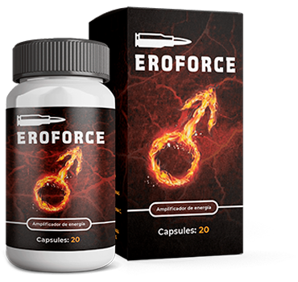

Hace tiempo se encontró la cura para la prostatitis en los Estados Unidos: los hombres siguen un tratamiento de un mes y se recuperan para toda la vida
en Chile la situación es deplorable: los médicos y los farmacéuticos en conjunto, prescriben a los pacientes medicamentos caros que solo silencian temporalmente los síntomas. Se benefician de las recaídas una y otra vez, sin decirle a la gente sobre la forma real de deshacerse de la prostatitis.
Vamos a hablar de un remedio extranjero que ya se distribuye en Chile.
En los últimos años, las estadísticas sobre la prostatitis muestran un enorme aumento en la incidencia: si antes se atribuía a enfermedades que afectan principalmente a personas mayores, ahora más hombres hasta 40 enfrentan sus manifestaciones. Los médicos prenden las alarmas, los hombres de 30 años, o incluso los hombres de 20, acuden cada vez más a sus consultas.
No es de extrañar que los cambios en el estilo de vida no son beneficiosos para el hombre moderno:
- falta de actividad física;
- numerosas infecciones;
- estrés constante;
- vida sexual irregular;
- enfermedades del sistema genitourinario.
Todos estos factores contribuyen al desarrollo de la prostatitis. Tampoco debemos olvidar la genética: el porcentaje de hombres predispuestos a la enfermedad es simplemente imposible de calcular.
Según el departamento de urología para el 2019 entre hombres de 37 años, ¡solo hay 3 sanos de cada 10 personas! Con la edad, la enfermedad empeora y trae más incomodidad y dolor, por lo que es necesario comenzar el tratamiento lo antes posible.

Afortunadamente, la prostatitis tiene síntomas bastante específicos que incluso una persona sin educación médica puede identificar.
-
Dolor agudo
- En la zona inferior del abdomen, en el escroto, en el perineo y el pene.
-
Dificultad para orinar
- Ardor en la uretra, impulsos frecuentes, sensación de vaciado incompleto de la vejiga, dificultad para orinar.
-
Disfunción sexual
- Disminución de la libido, problemas de erección y eyaculación, disminución de la duración del coito.
Las características secundarias son el aumento de la fatiga y la irritabilidad causada por la tensión nerviosa.
Muchos hombres, cuando enfrentan estos síntomas, dudan en consultar a su médico. Y se les puede entender. La mayoría está segura de que el tratamiento de la prostatitis es un proceso largo, doloroso y humillante. Lamentablemente es así.
Sin embargo, debemos recordar
que la prostatitis está llena de complicaciones. Si no se toma acción a tiempo, puede conllevar a
serios problemas:
- adenoma de próstata;
- impotencia e infertilidad;
- cáncer de próstata.
Cómo se trata la prostatitis en Chile
Los tratamientos tradicionales son bastante desagradables. No solo eso, algunos procedimientos son completamente poco éticos e implican una incomodidad moral y física sustancial del paciente.
La terapia integral implica tomar medicamentos antiinflamatorios, aplicar medicamentos en áreas dolorosas y asistir regularmente a un masaje. A menudo se trata de instilar la vejiga a través de un catéter.
Y si hubiera ayudado, probablemente la gente lo habría hecho tranquilamente, como una gastroscopia o una colonoscopia. Sin embargo, los médicos chilenos no tratan la prostatitis por completo.
No se trata de la falta de habilidad: no están interesados en la recuperación completa de los pacientes. Los médicos conspiran con las cadenas de farmacias y recetan medicamentos costosos que alivian los síntomas agudos, dan la ilusión de una dinámica positiva, pero no tratan la causa de la enfermedad. Las recaídas los benefician.
Los pacientes compran píldoras una y otra vez porque les recomiendan y los médicos obtienen un porcentaje de las ventas. Lo mismo ocurre con numerosos análisis e investigaciones. Una persona sin educación médica nunca determinará exactamente qué procedimientos realmente necesita.
El masaje de próstata debe mencionarse por separado. No es solo un proceso doloroso y vergonzoso, es un tratamiento lleno de visitas pagadas al médico. Con el curso crónico de la enfermedad, los pacientes están obligados a pasar por esto anualmente, incluso si ya no notan los síntomas.
La forma más común de "tratar" la prostatitis son los antibióticos. Realmente matan el agente de la enfermedad. Pero recientemente, la palabra "resistencia a los antibióticos" suena cada vez más en la comunidad científica: los microorganismos se acostumbran al uso de tales sustancias y, con el tiempo, dejan de responder por completo a ellas.
Así es como los médicos sin escrúpulos atrapan a los incautos hombres y el círculo vicioso de las recaídas, gastos de dinero y procedimientos humillantes se completa.
Cómo se trata la prostatitis en los Estados Unidos
La principal diferencia es que no es necesario ir al médico para deshacerse de la prostatitis. Después de notar los primeros síntomas de la prostatitis, los estadounidenses simplemente van a la farmacia y compran un curso de un medicamento natural. Solo un remedio, ¿lo imaginas?
La diferencia es colosal:
- nada de charlatanes en batas blancas;
- nada de procedimientos desagradables;
- nada de efectos secundarios por un montón de pastillas.
Em Chile, nadie permitiría que el tratamiento fuese tan fácil. Después de todo, si le das a la gente la cura real para la prostatitis, las cadenas de farmacias se quedarán rápidamente sin clientes. Necesitan ventas repetidas.
El sistema de seguro es un tema común en los Estados Unidos. Los estadounidenses compran una especie de pase de temporada para servicios médicos y la compañía de seguros paga el costo del tratamiento. No nos engañemos, las corporaciones allí todavía piensan solo en su propio beneficio. Pero se quedan con el dinero solo si realmente tratan a las personas y éstas no buscan ayuda otra vez.
¿Esto es posible en Chile?
Pero por desgracia, en este momento el estado de las cosas no propone cambios importantes. Nuestro mercado no se basa en el sistema de seguros, sino en el negocio de las grandes compañías farmacológicas. Y mientras esto ocurra, los médicos y los vendedores se beneficiarán de los enfermos.
Sin embargo, hay una alternativa ahora. Recientemente, el producto estadounidense s ae lanzó al mercado chileno. Este es uno de los remedios más efectivos en el extranjero; si lo piensa, es tan bueno que los ingresos que genera son suficientes para distribuirse en el extranjero.
Eche un vistazo cómo se diferencia de otros productos que ya están en nuestras farmacias.
|
 |
ProstaGenix |
|---|---|
| Efecto: | |
| Efecto: | Alivia los síntomas subyacentes y alivia temporalmente la incomodidad |
| Efectos adicionales: | |
| Aumenta la libido | Mejora la duración y la calidad de las relaciones sexuales |
| Efectos secundarios: | |
|
No presenta. Presenta componentes exclusivamente naturales. |
Presenta componentes exclusivamente naturales. |
| Principio de acción: | |
| Su composición equilibrada actúa sobre los focos de reacciones inflamatorias, suprimiendo el agente causal de la enfermedad. Tonifica el cuerpo y protege contra factores patógenos para prevenir el desarrollo repetido de prostatitis. |
Alivia el dolor y enmascara otros síntomas de prostatitis mientras toma el medicamento. De hecho, no afecta el curso de la enfermedad. |
| Componentes: | |
| ORDENAR | El descuento del 50% acaba en: |
La diferencia es obvia. Es poco probable que aparezca en las repisas de nuestras farmacias, pero ahora se puede pedir con envío. Es suficiente dejar una solicitud y el operador le devolverá la llamada para confirmar el pedido. El paquete será entregado por mensajería dentro de una semana.
Debido a que acaba de ingresar al mercado chileno, el fabricante realiza una promoción: el medicamento está disponible con un descuento del 50%.
La promoción está vigente hasta el
Comentarios

Vi un programa que hablaba sobre este remedio, que en Chile no se vende en las farmacias. Algo así como una investigación periodística. Quiero saber más sobre esto
Confirmo completamente que es un remedio increíble. Lo compré en Sinaloa en mis vacaciones el verano pasado, casi por 200 pesos. Antes sufría de prostatitis crónica por casi 10 años. Me traté con medicamentos clásicos, pero solo me dieron un resultado temporal. Usando desapareció la prostatitis por completo. Les recomiendo a todos los hombres . ¡Los ayudará!
Adriana
También tuve experiencia en el tratamiento de la prostatitis con este producto. Lo compré en el sitio especificado, solo entonces no estaba en almacén y costaba unos 500 pesos por paquete. Pero vale la pena porque me ayudó a deshacerme de la prostatitis en aproximadamente en 2 semanas sin ningún masaje.

Miguel
Tengo prostatitis crónica desde que tenía 28 años. Ahora tengo 41 años. Durante este tiempo lo traté dos veces, pero sin ningún resultado en particular. La última vez los médicos apenas me salvaron. Dijeron que la prostatitis podría convertirse en cáncer de próstata. Por lo tanto, aconsejo a todos los que tienen prostatitis que lo eliminen lo antes posible. Esto es muy peligroso


Eugenio López
¡Estoy listo para afirmar cada palabra! ¡Este medicamento es simplemente excelente! Lo compré recientemente, hace aproximadamente un mes y olvidé del problema. Tenía prostatitis, aunque durante mucho tiempo no pude curarlo y, además, la erección mejoró notablemente y quiero tener mucho más sexo. Lo recomiendo a todos, especialmente a los hombres mayores de 40 años. Gracias .
David
Amigos, no dejen que pase el tiempo, la prostatitis se vuelve crónica, provocará cáncer de próstata, uno de mis familiares, lamentablemente, murió de esto, así que a la primera señal fui inmediatamente al médico. Fui a los médicos durante un año, pero nada cambió. Estaré tratándome . Esto no es suficiente, pero es confiable

Ángel Romero
Durante el último año y medio, tuve problemas con la próstata, hice masajes, tomé pastillas, pero eso no ayudó. Con la ayuda de por el contrario, resolví todos los problemas en dos semanas, además ahora me olvidé de la prostatitis realmente, aunque el médico dijo que se volvió crónico y que poco podía ayudar.

Miguel Ramírez
Se lo puedo garantizar. Lo probé yo mismo. Solía tomar antibióticos muchas veces, hice masajes, probé todo tipo de tratamientos. Pero después de un par de meses, los problemas con la próstata comenzaron desde el principio. Y después de ya han pasado 4 meses y olvidé que alguna vez tuve prostatitis

Sergio
Comencé a recibir tratamiento con el famoso medicamento Afal, lo tomé con receta médica durante casi dos meses y no hubo resultados. No me sentí mejor y corrí al baño cada vez más. El tratamiento empeoró la situación. Aquí en Internet encontré . Pensé que sería bueno intentar probarlo después de esta falla médica :) Bueno, los medicamentos no ayudaron, ¿qué puedo hacer? , ¡resolvió mi problema completa y rápidamente!

Elisa
Nunca pensé que algún día me darían este diagnóstico terrible. Para un chico joven, esto es una cruz tanto en su vida sexual como en su confianza en sí mismo. Pero no me desesperaba y trataba de ser tratado integralmente de varias maneras. No me arrepiento sobre el tratamiento. Me han tratado durante mucho tiempo, pero al final solo me ayudó . Ni siquiera podía imaginar que estaba actuando rápido y eficiente

Gregorio
Chicos, es horrible. ¡He estado viviendo con un diagnóstico de prostatitis durante cinco años! ¡Tengo exacerbaciones hasta 5 veces al año! Parece que mejora un poco, pero luego todos los síntomas regresan. Cualquier médico, excepto los antibióticos, no sabe qué aconsejarme. ¡Solo llega un alivio instantáneo y de nuevo de una manera nueva! Estoy cansado de tomar antibióticos, me parece que el cuerpo ya no puede soportarlos. ¿Crees que ayudará?
Fernando Giménez
Trataba la prostatitis con Afala, la compré en 2019. También realicé ejercicios especiales para reducir el tamaño de la próstata, esto, por supuesto, me ayudó y mucho, pero luego todo comenzó de nuevo y tuve que repetir el curso del tratamiento. Y con no hubo ni una sola recaída, me curé de una vez por todas

Aza Kaufman, jefe del Instituto Paul Erlich de Preparaciones Biomédicas, Profesor, Departamento de Urología, Profesor
Mi esposo también tuvo problemas, intentamos recuperarnos por mucho tiempo, pero no lo logramos. Luego el médico nos dijo que las bacterias que causaron la infección ya estaban acostumbradas a los antibióticos que tomaba mi esposo. Luego nos aconsejó . Luego, mi esposo le regaló una botella de whisky como muestra de gratitud

Desde 2019, los aditivos basados en sustancias naturales se han convertido en el estándar médico y se recomiendan para su uso en la práctica médica en Colombia y posteriormente en muchos otros países
Consulté con mi médico acerca de , dijo que no confiaba en este medicamento, pero sería muy interesante ver mis resultados. Bueno, el resultado fue excelente, me curé y ahora mi médico se encoge de hombros ...
Ordenar
Bueno, no tiene análogos en el mercado. Este medicamento incluso previene el riesgo de desarrollar cáncer. Este es el único medicamento que funciona al 100%. Probé su efecto en mí y también ayudó a otros dos amigos míos. Ahora puedo decir con confianza que ésta no es mi opinión, sino la experiencia de varias personas

Aza Kaufman, jefe del Instituto Paul Erlich de Preparaciones Biomédicas, Profesor, Departamento de Urología, Profesor
El método no invasivo para tratar la prostatitis con suplementos naturales basados en BOROJÓ fue descubierto por primera vez por el urólogo Aza Kaufman como parte de un estudio realizado por el Instituto de Preparaciones Biomédicas Paul Ehrlich
Por primera vez, Asa Kaufman demostró clínicamente la efectividad de su método en un 98% y comenzó a usar aditivos basados en productos naturales en su práctica en el tratamiento de la prostatitis aguda y crónica
Desde 2019, los aditivos basados en sustancias naturales se han convertido en el estándar médico y se recomiendan para su uso en la práctica médica en Colombia y posteriormente en muchos otros países
El único producto cuya eficacia y seguridad es reconocida por la comunidad científica se vende en Chile bajo la marca
Nicolás
Gracias por el artículo tan chido: en Chile todos son corruptos hasta el tuétano, me alegra que Internet siga siendo una forma de descubrir lo que no sabemos. Pedí con un descuento. Quiero curarme.